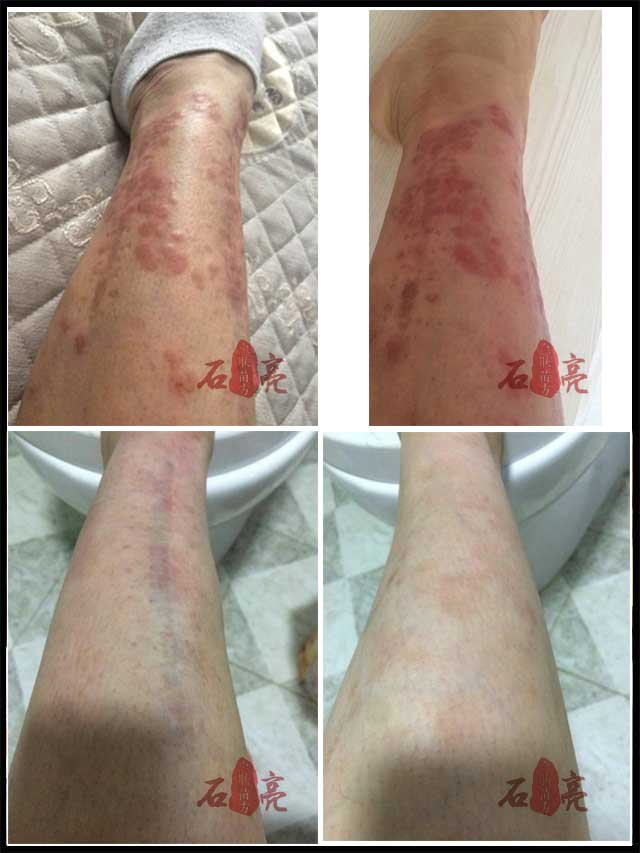
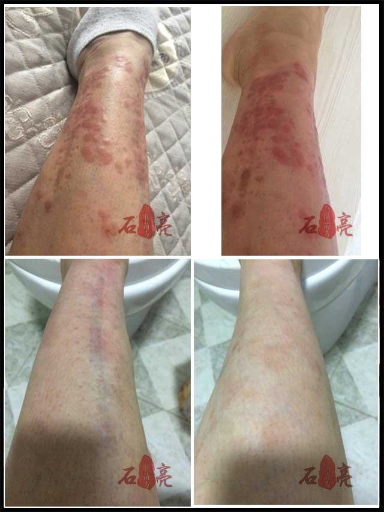
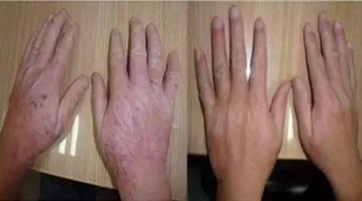
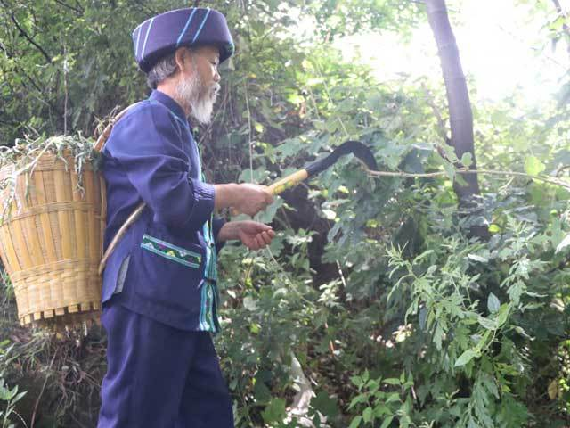

皮肤病除生理上使人痛苦，还使人的外观变丑陋，影响人的工作、学习，妨碍婚姻、社交。认为治皮肤病，不仅仅是治皮囊那么简单。在如今这个视觉经济时代尤其如此。
但 牛皮癣、 湿疹、 青春痘之类别的顽固性皮肤病，中医西医通常都没有特别好的办法。以西医或者中医为主要治疗手段的医院皮肤科的治愈率也是各科室中最低的。
为什么会出现这种情况呢？来听听侗医传人杨老医师怎么说：
↑神秘的黔东南，孕育了很多民间皮肤病验方，百试百灵，效果神奇！

一是市面上流行的西药，其优势本在靶向治疗，单一病灶治疗，不擅长立体治疗，而牛皮癣、荨麻疹之类的顽固性皮肤病，恰恰是由体内毒素引起的皮表反应，是 全身性问题，光治表皮病灶，必难治愈，即使偶有疗效，也会为二次复发埋下毒根。
二是市面上惯用的中药疗法，其优势本在养生，气血改善。顽固性皮肤病本是血液、骨质、骨髓中含有毒素，皮肤不得不以长癣长疱的方式排毒， 若只提升气血，必定使毒素在血液中传播更快，病毒流向全身，扩大病灶面积，加重病情。此外，中药并不擅长靶向治疗，无法针对皮表的单个病灶集中用药，不能快速消除皮表症状，很难使人感受到药效，这是很多人用中药治皮肤病没有感觉的根源。
中医擅长养生，蒙药擅长补益，藏药擅治风湿病，西药擅治心血管病，每种医学都有擅长的领域。侗医药则擅长治疗皮肤顽症。
它 的这一特点，与侗人的生活环境息息相关。侗人长年生活于虫蛇鸟兽之中，极易感染风气水火各种细菌、病毒毒素，产生皮肤瘙痒、过敏，形成各种皮肤病。侗人从 小就学会从田间地头找草药，揉搓成汁液，敷在患处消除痛楚，其余的熬成药煎服。这是每个侗民必备的生存技能。故此，侗民百草皆药，人人会医，拥有许多克制 皮肤顽症的民间秘方，像世人熟知的拔毒生肌方、辟毒制乱方都为侗人独创。

侗医大师提醒您：肝脏有毒，皮肤遭殃
杨老：“皮肤问题，肝脱不了干系。但肝脏问题一般没有典型的特异性症状，以下皮肤方面的病理表现，肝有很大关系，可惜人们都不重视。”
例如，牛皮癣疾病的发生与牛皮癣患者血热、血燥是分不开的。而牛皮癣患者之所以会出现血热、血燥的现象与肝脏是有密切关系的。侗医的理论系统中，在人体的器官中，肝脏属木，性急而动，主一身之气。而气则会导致热气、燥气，促使血热、血燥现象出现。
 



如果你也有牛皮癣、鱼鳞癣、白癜风、皮炎湿疹、荨麻疹、各类杂癣等皮肤病，想治好自己的疑难杂症，请长按识别下方二维码，关注杨医师的微信号：， 进行 免费咨询，他能为了你远程诊疗。

↑感谢张晓霞提供的照片。
山西太原的张晓霞患有牛皮癣很多年，想尽了办法就是没办法好，通过朋友介绍找到了杨医师，5个月的时间，老牛皮一天天消失，全好了，终于不再自卑，能像正常人一样处对象了，特地发来照片，跟杨老先生分享康复的喜悦。

↑感谢福州小周提供的照片。
小 周自从患上神经性皮炎，痛苦不堪。越抓越痒，越痒越抓，抓的出血，才肯罢休，白天工作没精神，晚上睡不好，医院开的药，药店买的软膏用了一堆，只是略有缓 解，不能完全好，皮肤变得粗糙，增厚，色素沉着，难看死了，用了杨医师的专方一个月，就再不痒了，皮肤恢复细腻光滑，人也精神了！

↑ 感谢老余愿意提供自己的照片。
山东滨州的老余，患慢性湿疹5年了，痒用刀刮，热水烫，潮红起水泡，流脓流水，皮损处厚得像树皮一样粗糙，浑身上下没一块好地方，用了很多方法都好不了，自从用了杨医师的秘方，3个月后湿疹全都好了。
杨医师首度公开皮肤病秘方——
杨医师的方子遵崇侗医先祖创立的“三位一体”组方原则，一方含三类药，包括： 起主治作用的各碑嘎药（领头药），起补益功能的各搜嘎药（铺底药），起增效作用的各薄嘎药（监护药）。 配单不配双，方分阴阳，能破除皮肤病中的各种风寒气水毒，打破疾病旧状态，增进皮肤新组织，化腐肤皮疹为正常肌肤，变朽肌斑疮为健康组织。

↑ 制作苗药实景
配方①：银线草（四块瓦）、苦参、蛇床子、雪莲、地肤子、白藓皮、黄柏、丹皮（牡丹皮）、紫草等、 本方适用于银屑病（牛皮癣）等；
配方②：苦参、黄柏、蛇床子、明矾、龙胆草等，本方适用于皮炎湿疹等；配方③：葛根、苦参、白癣皮、蛇床子、公丁香、五倍子、野菊花、甘松等， 本方适用于白癜风；
配方④：七叶一枝花、马齿笕、半边莲、薏苡仁、蒲公英、皂角刺、红花、忍冬藤、血水草、甘草等， 本方适用于疱疹，扁平疣、尖锐湿疣等 ……
此外，还有专门针对神经性皮炎，掌跖脓疱病，淀粉样变，鱼鳞病，荨麻疹，结节性痒疹，毛囊炎，痤疮（青春痘）等症的对症苗方。受篇幅所限，就不在此列出。
黔东南是少数民族聚集地，少数民族的人们因生存环境恶劣，各种整治皮肤病的窍门多如牛毛，古有“疾病八百，苗药三千”之说。杨医师珍藏着一百多副祖传偏方，远不止这几味药方，而且都是侗人、苗人等少数民族使用上千次、上万次的效验方。
杨医师的方子制成的制剂，能对症施于皮肤，真正体现了侗医药整治皮肤病的优越性，体现出侗族民间验方、非遗偏方的显著功用，大家为杨医师的无私之举点个赞吧。

↑ 这就是杨医师的百宝柜，塞满眼框的全是道地药材，与药店的药柜数量比起来，真是数量多得惊人。而且，这还只是局部。
荨麻疹再也不犯了，心情好极了！

↑ 西 安的小姑娘患荨麻疹多年，每年冬天发的严重，瘙痒难忍，抓得一道道印子，成片的风疙瘩让人心烦，浑身上下不自在，难受的时候自己躲起来拼命抓。打过针，吃 过药，做过脱敏治疗，效果都不明显，后来用了杨医师荨麻疹内外调理专方，赶毒修肤的同时，内调扭转过敏体质，增强体质，就这样坚持了二个月就好彻底了，再 也不犯了。

↑ 天 津的路强是个大老爷们，每次坐公交地铁，还要带随身带一个水垫子，被朋友取笑很“娘”。他觉得很无奈，因为他有难言之隐——坐板疮（学名股癣）。等公交的 时候想挠，坐地铁的时候也想挠，夏天最容易复发，特别是坐了人家热板凳。年年治，年年发。在微信朋友圈看到杨医师公布的方子，用了才10多天，屁股上的红 疙瘩少了，也不痒了！40°的高温天，坐了人家热板凳也没再发过。再热的天，也不用带水垫上班了！
如果你也有牛皮癣、鱼鳞癣、白癜风、皮炎湿疹、荨麻疹、各类杂癣等皮肤病，想治好自己的疑难杂症，请长按识别下方二维码，关注杨医师的微信号： ，进行 免费咨询，他能为了你远程诊疗 。

↑ 鱼鳞病困扰大半生，如今没有“鱼鳞”一身轻，不愧为除癣秘方，不愧为“侗医祖师”。
顽固皮癣好了，穿什么都好看！

↑ 广州的小玲，患皮肤顽癣多年，吃过西药，中药，看过多家医院，效果都不理想，通过杨医师的指导，使用了他给的治癣偏方，效果就是不一般，使用二个月后的效果对比图可以说明一切！
13 年白癜风足不出户，用 杨医师 白癜风专方，
两周期，下楼见人！

↑ 山 东烟台的丁先生今年41岁，患白癜风已有13年了。面对自己当初的经历，丁先生长吁短叹的说，“我的白癜风症状主要是在脸上，一开始只是一块很小的斑点， 这么多年下来，已经长成一大块了，其实13年来我一直在寻找康复的方法，只是一直都没有什么实质性的进展，有几年去比较大的医院看，是取得了一些效果的， 但是后来又复发了。”今年他贵州的妹妹给他寄了杨医师的白癜风专方，丁先生用了效果太意外。“因为我用过太多产品了，根本不能止住复发。没想到天底下还有 这么神奇的偏方，纯野生的珍贵苗药材效果确实不一样，用上一个礼拜左右，我就明显看到我脸上的白斑变小了。现在我用了两个周期左右，面积只剩下脑后勺这块 一点点，我想，只要坚持用，肯定能康复。现在我敢见人了，并且我打算再坚持使用一周期，防止复发！”。
我的痤疮终于好了，痘印也没了，感谢杨医师！

↑苏小姐，24岁，看过西医中医，吃过西药中药，搽过祛痘软膏，越来越严重。使用杨医师的痤疮专方一周期，疹子减少，不刺痒。用到三个周期，完全康复，连痘坑都长平了，无疤无痕。三代秘传，侗族治癣一绝！
杨医师揭秘：皮肤顽癣久治不愈 的三大原因——“毒邪”除不 尽，皮肤屏障功能确实， 人体阳气低下，癣病难以断根！
为什么皮癣医院看不好？西药吃不好？激光打不掉？中药不见效？杨医师认为，毒是皮肤病的本，乱是皮肤病的标。 有毒而疏导则治，无毒不守正则乱。像 牛皮癣，白癜风，皮炎湿疹，顽固杂癣等，就是湿毒，风毒，热毒等毒素在体内的淤积。所以说，“毒素”淤积了，身体排毒功能受阻了，是形成皮肤病的根本原 因，一要祛毒，二还要保证外边毒邪进不来，三是要扶助人体正气，增强人体消解毒邪的能力，只有这样，才能斩草除根，从源头上遏止病菌，毒邪的再次入侵，皮 肤病才不会复发。
杨医师独门绝技：内擀毒，外修肤，中扶正，
“风邪湿毒”驱除干净，皮肤顽癣自然痊愈。
传 统方法，都是想方设法从体内把毒素、毒邪“拔”出来，但是很多毒素卡在骨头缝里、表皮组织深处，从外边往出拔一定会留下死角。只有把毒素向内赶，赶到血液 里面，然后通过血液循环排除，皮肤正常张合，才能排毒彻底，不留死角，康复皮肤病。治疗皮肤病，就是调理身体，一靠疏导，将毒素引流到体外；二靠改良人体 内环境。杨医师的独门绝技 “内赶毒，外修肤，中扶正”三大步骤，轻松拔掉发病基础，让皮肤病不再犯。
如果你也有牛皮癣、鱼鳞癣、白癜风、皮炎湿疹、荨麻疹、各类杂癣等皮肤病，想治好自己的疑难杂症，请长按识别下方二维码，关注杨医师的微信号： ，进行 免费咨询，他能为了你远程诊疗 。
不光皮肤顽癣让人苦恼，一些过敏性皮炎、荨麻疹也让人烦不胜烦，这些慢性的皮肤疾病，连医院都毫无办法。在这个时候，杨医师的秘方就显示出它的优越性了。这是千年间侗医祖师不断实践得出的真知，真正打破了不查过敏源，就无法击溃过敏性皮肤病的世界难题。
患者只需要在患处交替使用杨医师的组合制剂， 急性皮炎、湿疹、荨麻疹当天止痒，3～7天左右消除所有症状，恢复皮肤常态；慢性皮炎、湿疹等，当天症状缓解，15天左右基本康复，那些顽固性牛皮癣、各类杂癣等，3～6月基本都能康复。 （注：以上康复时间取平均值。个体有差异时，时间略有不同）

报个年龄，说出自己的情况，并传患处清晰照一张，杨老爷子师徒将通过微信接诊，并且做到一病一方，做到一次开方，1～3个月癣症好转，3～6个月消失，消除病源不复发！

↑ 杨医师的弟子们学习采药，不惜以身试毒，尝遍百草，有时为了找到一味好药，常常翻山越岭，夜宿山林。
鉴 于杨医师年事已高，但咨询者实在太多，他特意让他的弟子们，专门打理这个微信号，为皮肤病患者服务。另外，杨医师还想提醒大家，微信的问诊需要按顺序依次 回复，每天只接诊20位，如有回复不及时还望患者谅解。 杨医师特别承诺，只要你来咨询，一定会耐心回复，直至帮你解决顽症为止，只治半截病，这样的“烂尾工程”我从来不做！

↑ 杨医师的弟子们得到真传，都会抓药，试药，配药。

↑ 杨医师的弟子们得到真传，都会抓药，试药，配药。
有些外地的朋友反应，担心去药店里买不到正宗的药材，一些上班的人也说没有时间坚持每天自己煎制，更担心自己对药材比例、煎制时间拿捏不准，怕这样疗效会大打折扣。不用担心，皮肤病患者的困惑杨医师看在眼里、听在耳里，经过研究和实验， 杨医师将私藏秘方按精确比例配伍后，委托知名苗药企业—— “贵州苗仁堂制药有限责任公司”制成了 喷剂、滚珠药露和云南维和制药的片剂。不同病，不同方，搭配使用，相得益彰，功效卓越。
杨医师的皮肤病秘方对： 银屑病（牛皮癣）、鱼鳞病（蛇皮癣）、皮炎湿疹、荨麻疹、神经性皮炎、各类杂癣、皮肤瘙痒都有特效。如果你对杨医师的秘方和用法还有什么疑问，都可以加杨医师的微信号，一起交流皮肤病康复经验。
如果你也有牛皮癣、鱼鳞癣、白癜风、皮炎湿疹、荨麻疹、各类杂癣等皮肤病，想治好自己的疑难杂症，请长按识别下方二维码，关注杨医师的微信号： ，进行 免费咨询，他能为了你远程诊疗 。
报个年龄，说出自己的情况，并传患处清晰照一张，杨老爷子师徒将通过微信接诊，并且做到一病一方，做到一次开方，1～3个月癣症好转，3～6个月消失，消除病源不复发！
精选留言

东风公司销售部
真 的非常感谢杨老，我牛皮癣七八年了，最严重的时候全身都是，一直在控制病情，可是手上腿上背上一直有，各大医院一直治，一直断不了根，在杨老这里拿了两个 周期，平时应酬也比较多，不是很注意，结果前期有些反反复复，感觉效果不是很明显，后期杨老指导我严重注意忌口，配合治疗，真的康复的。太感谢杨老了。
7月3日
天
2009 年的时候两三天全身开始冒出红点，一直没怎么管，后来在人民医院，检查结果是我得了 "牛皮癣"那时候的我还没有什么感觉出。直到后来，当病情变得更加恶劣，从腿上慢慢扩展到全身，那段时间门都不敢出。各大医院看了好多次，在网上也咨询过 不少，中药西药都吃遍了，一直时好时坏。期间有好几次就差点要放弃。偶然看到了杨老师的宣传，就加上了杨老师的微信，之后与家人商量好来治，当时就拿了一 个周期的药物，在杨老的指导下，有了一些效果便坚持下来了。第二个周期效果就非常明显了，现在完全康复了，在这里真的非常感谢杨老师
7月2日GOOD！
杨老师，孩子八岁了，腰上，胳膊上都有一小块白癜风，大人现在想看看她的白癜风她都不让，杨老师你说这怎么治疗啊？不想给孩子怎么小就留下心理阴影。
7月1日
大海
得了这种皮肤病每天很是烦心，工作和生活受到了极大的影响，一直在寻医问药，看到了杨老的广告，很想试一试，但是前期实在是.....，我也是想看看大家的用药情况，现在我决定了去试一试，希望能看到效果。
6月30日
华仔
我 是一名白癜风患者，患病8年了，主要在手臂脖子上，我外婆有，我妈妈没有，到我这里就有了。去过很多医院治疗过，做过308激光，喝过中药，效果都不显 著，一次偶然的机会看到了杨老师的宣传，我就加了杨老师的微信，通过微信拍照告诉杨老师我的病情，杨老师给我制定了治疗方案，用药第一个周期，上班经常熬 夜，饮食上也控制得不是很好，用药效果不好，在杨老师耐心的指导下，和我自己的控制下，用药第二个周期有明显的效果，白斑颜色逐渐变淡，后期坚持用了四个 周期的药物，现在已经完全康复。以前夏天不敢穿短袖，很自卑，真的很感谢杨老师，希望杨老师能帮助更多患者康复。
6月29日
一千个伤心的理由
老师，我白癜风，怎么治?多久见效？多少钱？怎么联系你？？？？
6月28日
文明
也没什么好说的，还在用药，说的是神经性皮炎，等彻底好了再感谢你哈
6月28日
战狼
其 实现在网络上像这种治疗什么秘方的骗子特别多 这点谁不担心？开始被别人骗了尼玛9800都冒有医好 这回看到杨老这个宣传的 也是想的反正尼玛都被骗了万把 也不差这几千块 就找杨老试了哈 冒想到这8年的牛皮癣还真的医好 感谢的话不多说 杨老这时候应该在吃我送过去的鸭脖子
6月28日
上海滩
非 常感谢杨老 开始以为是性病 通过杨老才知道这是那个什么阴囊湿疹 给我治了不到两个月就好了 现象性生活也比较可以 女朋友不嫌弃了 我开始也担心是骗子 现在借这个机会给杨老道个歉 你老是杠杠滴 这医术是没啥好说的 就是两个字牛逼 有时间去拜访你跟你带点我们大东北的特产
6月28日
夏刚
我 是一位牛皮癣患者，患病6年了，中药西药针灸都有治疗过，但是效果一直不理想，也是一次偶然的机会看到了杨老的广告，抱着试一试的心态加了杨老，用了杨老 的药，但是效果很明显，用了一个周期的药了白色鳞屑脱落了，也不痒了，我又购买了一个周期，感谢杨老，治好了我多年的皮肤病，祝愿杨老健康长寿，帮助到更 多的皮肤病患者
6月23日郑明轩
我 得了荨麻疹有四五年了，一直反复不能根治，每天睡不好吃不好，很难受，各种膏药偏方都有试过，但是还是一如往常，我本来已经灰心了，但是经朋友介绍找到了 杨老师，用了老师的苗药专方，七天瘙痒症状就减轻了很多，终于睡了个好觉，现在配合老师治疗，饮食控制忌嘴，也在逐渐改善了，真心感谢杨老师
6月22日
雯雯
我 是一位被牛皮藓困扰多年的患者，之前去医院看过很多次，用过外用的卡泊三醇软膏（金迪银） 、乐夫松，口服阿维A胶囊，刚开始用的时候有一点效果，但是效果不明显。后来又找了一位老医生帮忙治疗，当时是喝的中药，喝了一年了，也是不见好。就这 样，反反复复的治疗了7年。在我准备要放弃的时候偶然间在网上看到了杨绍臣杨老的宣传，我当时是非常不相信的，因为在各种大医院都看过了，一直没治好。也 没想过治疗，但是我家里人说我还年轻，而且也不是什么大病，反正钱也花了不少，也不在乎这几千块钱了。在家里人的极力鼓励和劝说下，我加了杨老的微信，当 时我没想过能治好，就抱着死马当活马医的心态来治，当时我就拿了一个周期的药，用了20天结果发现我的牛皮藓真的有明显的效果，当时特别开心，就跟杨老说 了，杨老说建议我再拿两个周期药，我觉得病有改变了比什么都好，我就又拿了两个周期的药，在杨老的治疗下，我的牛皮藓终于好了，现在已经好了大半年了，也 没复发，我自己也变得自信了。真的很感谢杨老，治好了我多年的牛皮藓。谢谢杨老！
6月15日
雨儿
杨老师，我现在哺乳期可以用你们的药吗？
7月3日